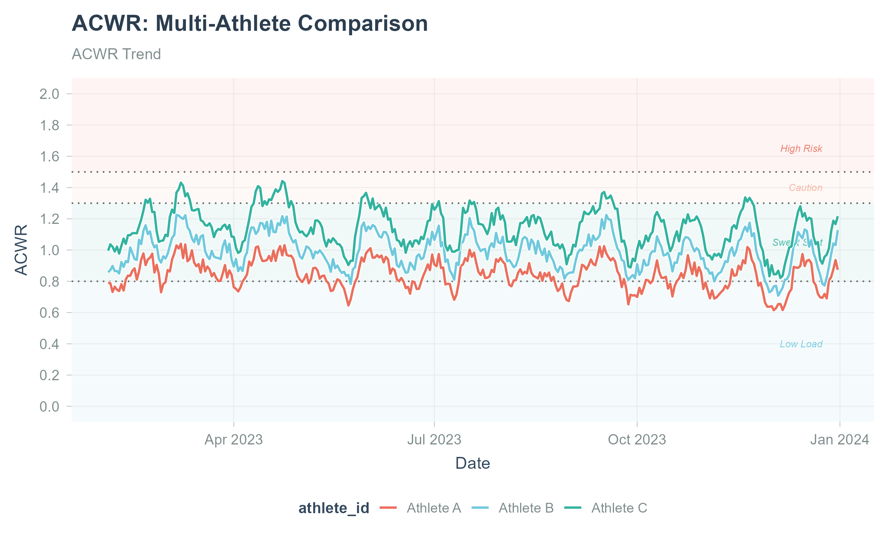
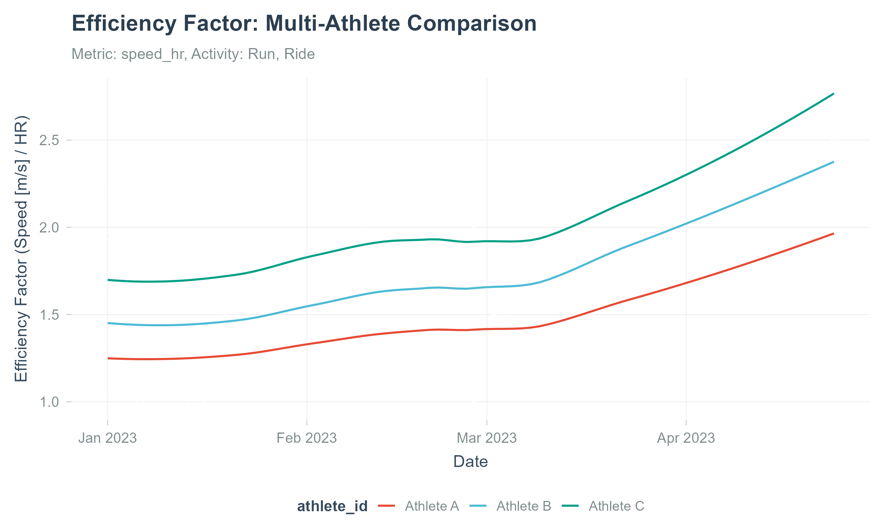

Athlytics


Current release installs directly from CRAN with install.packages(“Athlytics”).
Overview
Athlytics is a research-oriented R package for the longitudinal analysis of endurance training. It operates entirely on local Strava exports (or FIT/TCX/GPX files), avoiding API dependencies to ensure privacy and long-term reproducibility.
What is Strava? Strava is a popular fitness tracking platform used by millions of athletes worldwide to record and analyze their running, cycling, and other endurance activities. Users can export their complete activity history for offline analysis.
The package standardizes the workflow from data ingestion and quality control to model estimation and uncertainty quantification. Implemented endpoints include acute-to-chronic workload ratio (ACWR), aerobic efficiency (EF), and cardiovascular decoupling (pa:hr), alongside personal-best and exposure profiles suitable for single-subject and cohort designs. All functions return tidy data, facilitating statistical modeling and figure generation for academic reporting.
Key Features
- Reproducible by design - Fully offline; no API keys. Deterministic pipelines suitable for longitudinal studies.
- Sports-science metrics - Implements ACWR, EF, and decoupling workflows commonly used in exercise physiology; integrated QC checks.
- Uncertainty-aware - Functions return confidence intervals or reference bands where implemented, enabling transparent inference.
- Cohort support - Built-in helpers for multi-athlete datasets and percentile-band references.
- Tidy outputs - Consistent, analysis-ready tibbles for downstream modeling and figure pipelines.
📦 Installation
Install the current CRAN release
Athlytics is now available directly from CRAN. For most users, this is the recommended installation path:
install.packages("Athlytics")The CRAN release includes the offline Strava export workflow, ZIP-aware stream parsing, ACWR/EWMA/exposure robustness fixes, EF and decoupling stream diagnostics, cohort-reference helpers, and the rOpenSci review updates.
The source repository, documentation, issue tracker, and rOpenSci review record are linked from the package metadata and badges above.
Optional: stream parser support
Athlytics can parse TCX/GPX activity stream files when the suggested xml2 package is installed. FIT support is optional and uses FITfileR, which is available from the FITfileR r-universe repository.
If your Strava export includes .fit files (and you want Athlytics to parse them), install FITfileR:
install.packages(
"FITfileR",
repos = c("https://grimbough.r-universe.dev", "https://cloud.r-project.org")
)🚀 Quick Start
📥 Step 1: Export Your Strava Data
- Important: Before requesting your export, set Strava language to English (Settings → Display Preferences → Language). This helps ensure the exported CSV column names match what Athlytics expects.
- Navigate to Strava and open Settings → My Account.
- Under “Download or Delete Your Account,” click “Get Started” and then “Request Your Archive”.
- You’ll receive an email with a download link - this may take some time.
- Download the ZIP file (e.g.,
export_12345678.zip). As of 1.0.5 the.zipcan be passed directly toload_local_activities(). Stream-based functions can reuse that same ZIP path viaexport_dir:calculate_pbs(),calculate_decoupling(), andcalculate_ef()when you want EF to use activity streams for steady-state detection.calculate_ef()also falls back to activity-summary averages whenexport_diris omitted. Unzipping into a directory is still supported and is a reasonable option if you plan to iterate over the export many times.
💻 Step 2: Load and Analyze (Cohort Example)
This example shows a common workflow: loading data for several athletes, calculating their training load, and comparing one athlete to the group average.
library(Athlytics)
library(dplyr)
# 1. Load data for a cohort of athletes, adding unique IDs
athlete1 <- load_local_activities("path/to/athlete1_export.zip") |> mutate(athlete_id = "A1")
athlete2 <- load_local_activities("path/to/athlete2_export.zip") |> mutate(athlete_id = "A2")
cohort_data <- bind_rows(athlete1, athlete2)
# 2. Calculate ACWR for each athlete in the cohort
cohort_acwr <- cohort_data |>
group_by(athlete_id) |>
group_modify(~ calculate_acwr(.x, activity_type = "Run", load_metric = "duration_mins")) |>
ungroup()
# 3. Generate percentile bands to serve as a reference for the cohort
reference_bands <- calculate_cohort_reference(
cohort_acwr,
metric = "acwr_smooth",
by = character(0),
min_athletes = 2
)
# 4. Plot an individual's data against the cohort reference bands
individual_acwr <- cohort_acwr |> filter(athlete_id == "A1")
plot_with_reference(individual = individual_acwr, reference = reference_bands)📊 Core Analyses
All functions return clean, tidy tibble data frames, making it easy to perform your own custom analysis or visualizations.
Training Load Monitoring (ACWR)
Track how your training load is progressing to avoid ramping up too quickly — a key metric for monitoring training progression.

Aerobic Efficiency (EF)
See how your aerobic fitness is changing over time by comparing your output (speed or power) to your effort (heart rate). A rising trend is a great sign of improving fitness.

When an export ZIP or directory is supplied through export_dir, EF uses activity streams for steady-state detection; without it, EF is computed from activity-summary averages.
📐 Methods & Validation
This release implements widely used constructs in endurance-exercise analytics: - ACWR: rolling acute (e.g., 7-day) vs chronic (e.g., 28-day) load ratios with smoothing options. - Aerobic Efficiency (EF): output (speed/power) relative to effort (heart rate) over time. - Cardiovascular Decoupling (pa:hr): drift between speed/power and heart rate during steady efforts.
Important: ACWR is a descriptive monitoring tool and should be interpreted with caution. It is not a validated injury-prediction model; see discussion in the sports science literature (e.g., DOI: 10.1007/s40279-020-01378-6).
We provide input validation, outlier handling, and activity-level QC filters (e.g., minimal duration, HR plausibility ranges). For cohort summarization, Athlytics computes percentile bands and supports stratification by sport, sex, or other covariates when available.
📝 Citation
If you use Athlytics in academic work, please cite the software as well as the original methodological sources for specific metrics.
⚖️ Ethical Considerations
Athlytics processes personal training records. Ensure appropriate consent for cohort analyses, de-identify outputs where required, and comply with local IRB/ethics and data-protection regulations.
🤝 Contributing
Contributions are welcome! Please read our CONTRIBUTING.md guide. Please note that this package is released with a Contributor Code of Conduct. By contributing to this project, you agree to abide by its terms.
- 🐛 Report an Issue: Open an Issue
- 💡 Suggest a Feature: Start a Discussion
- 🔧 Submit a Pull Request: We appreciate your help in improving Athlytics.
🙏 Acknowledgements
This package has been peer-reviewed by rOpenSci. We thank Eunseop Kim and Simon Nolte for their constructive reviews, and Prof. Benjamin S. Baumer and Prof. Iztok Fister Jr. for their valuable feedback and suggestions.